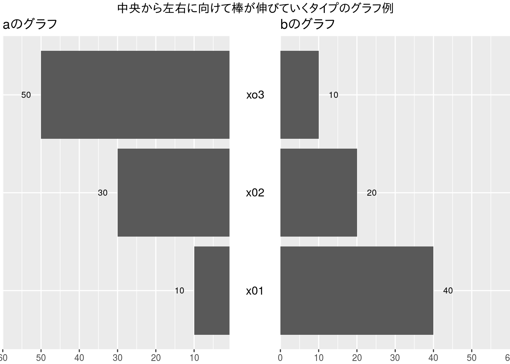
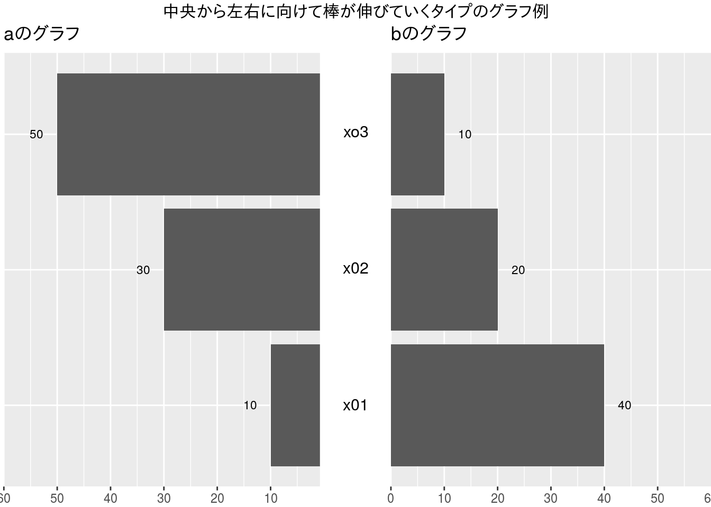

この内容は,以前私がRPubに公開した内容についてコードを確認して転記したものです。
##
## Attaching package: 'gridExtra'## The following object is masked from 'package:dplyr':
##
## combine
人口ピラミッドのようなグラフをggplot2でやりたいなと思っていたところで,以下の記事の最後の方にあるplotが気になったので、やり方をトレースして試してみた。
# パッケージロード
library(ggplot2)
library(gridExtra)
# 使用するデータ
df <- data.frame(fac=as.factor(c("x01","x02","xo3")),
a=c(10,30,50),
b=c(40,20,10))
# 真ん中の部分を生成
g_mid <- ggplot(data=df, aes(x=1,y=fac)) +
geom_text(aes(label=fac),size=4) +
ggtitle("") +
ylab(NULL) +
scale_x_continuous(expand=c(0,0),limits=c(0.94,1.065)) +
theme(axis.title=element_blank(),
panel.grid=element_blank(),
axis.text.y=element_blank(),
axis.ticks.y=element_blank(),
panel.background=element_blank(),
axis.text.x=element_text(color=NA),
axis.ticks.x=element_line(color=NA),
plot.margin = unit(c(1,-1,1,-1), "mm"))
# 左の部分を生成
g_left <- ggplot(data=df, aes(x=fac,y=a)) +
geom_bar(stat="identity") +
geom_text(aes(label=a),size=3, vjust=0.5, hjust=2.0) +
ggtitle("aのグラフ") +
scale_y_reverse(expand=c(0, 0), limits=c(60,0)) +
coord_flip() +
theme(axis.title.x = element_blank(),
axis.title.y = element_blank(),
axis.text.y = element_blank(),
axis.ticks.y = element_blank(),
plot.margin = unit(c(1,-1,1,0), "mm"))
# 右の部分を生成
g_right <- ggplot(data=df, aes(x=fac,y=b)) +
geom_bar(stat="identity") +
geom_text(aes(label=b),size=3, vjust=0.5, hjust=-1.0) +
ggtitle("bのグラフ") +
scale_y_continuous(expand=c(0, 0), limits=c(0,60)) +
coord_flip() +
theme(axis.title.x = element_blank(),
axis.title.y = element_blank(),
axis.text.y = element_blank(),
axis.ticks.y = element_blank(),
plot.margin = unit(c(1,0,1,-1), "mm"))
# 3つを組み合わせてみた
grid.arrange(g_left,g_mid,g_right,
ncol=3,widths=c(4.5/10,1/10,4.5/10),
top="中央から左右に向けて棒が伸びていくタイプのグラフ例")
grid.arrange()はいちいちgtableにしなくてもggplotオブジェクトでもいいみたいだったので、そのままもってきた。grid.arrange(..., main="hoge")ってなってたけど、このタイトル指定は{gridExtra}のv2.0以降廃止されててtop="hoge"になってた。theme()の内容を記述するのがかなりだるい。どっかにまとめたほうがいいかも。plot.marginの値を調整しないと行けないんだろうけど力尽きました。Enjoy!